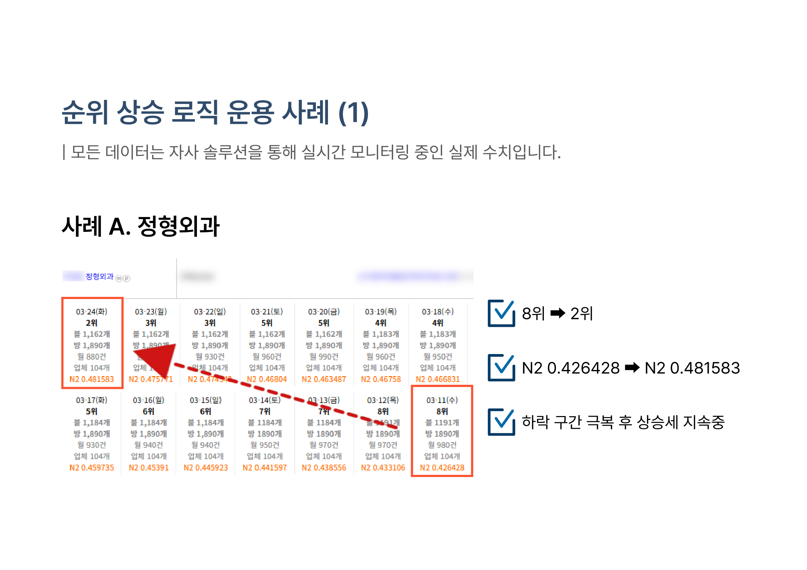
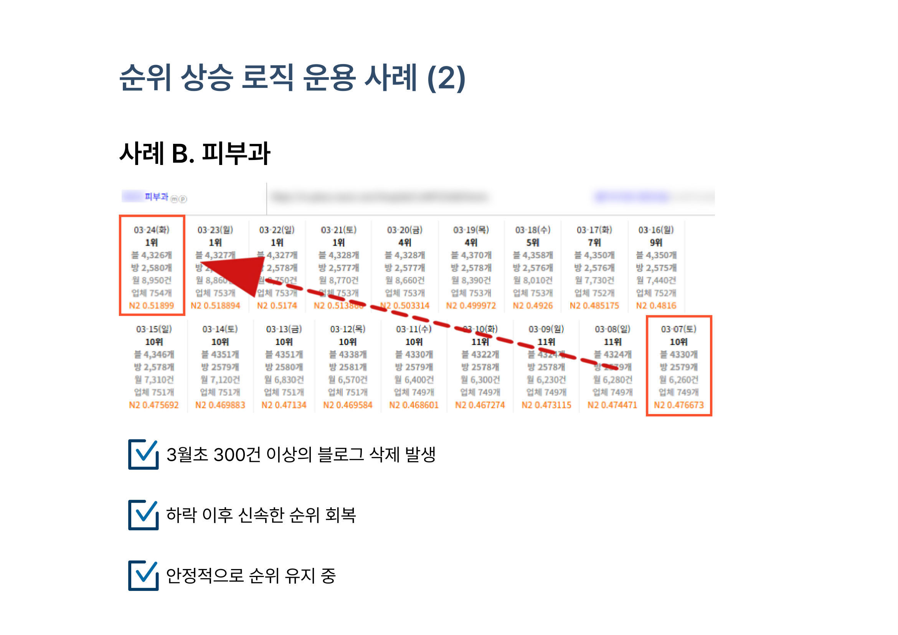
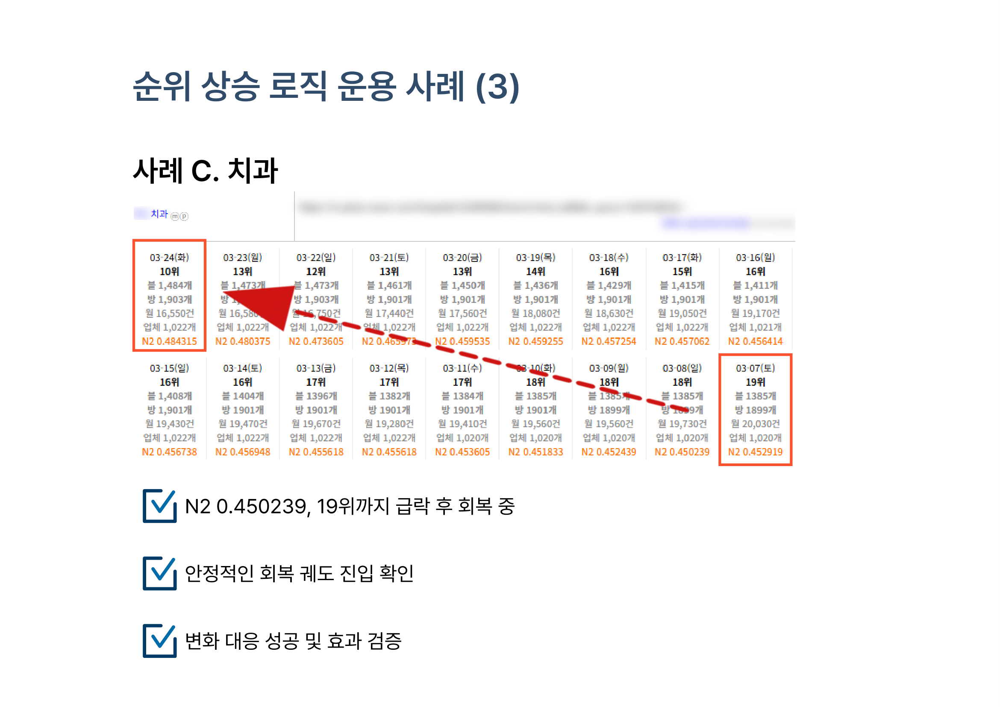
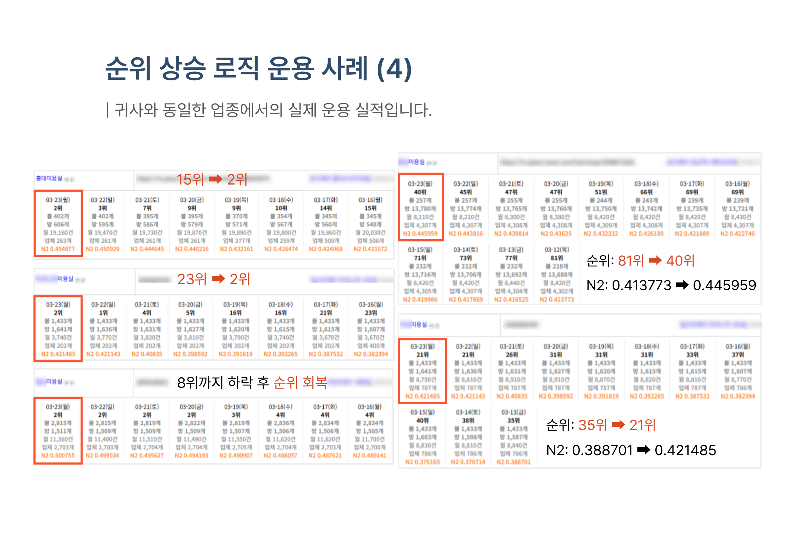
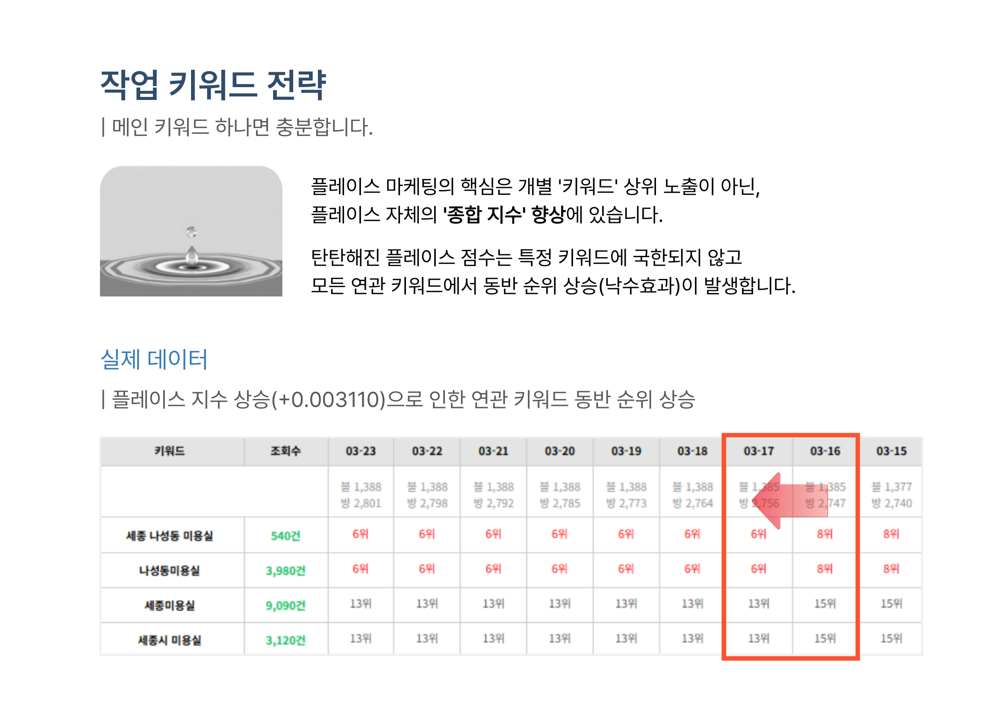
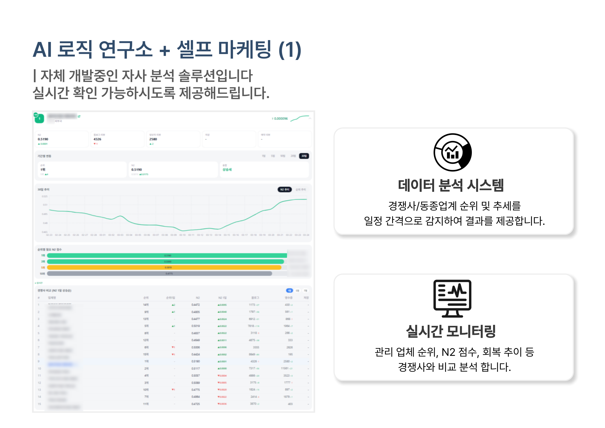

🛡️ 플레이스 안전보장형
플레이스 순위 회복 및 방어 전략
2026년 로직 대변화 / AI 로직 대응법
📌 2026년, 플레이스 마케팅 환경 변화
네이버 AI(CLOVA AI)가 플레이스 로직에 본격 도입되면서, 일정 패턴으로 유입되는 트래픽에 대해 제재 및 패널티를 부여하고 있습니다.
과거: 단순 유입량 경쟁
- 트래픽 양 = 순위
- 3~6개월 단위 로직 변경
- 배포형 블로그로 순위 상승 가능
- 공격적 작업 = 빠른 성과
현재: CLOVA AI 본격 도입
- 트래픽 패턴 감지 → 제재/패널티
- 1~2주 단위 세부 로직 변동
- 배포형 블로그 대량 삭제 + 순위 급락
- 공격적 작업 = 공격적 하락 수반
순위를 '올리는 것'보다, '지키는 것'이 더 어렵고 더 중요한 시기입니다.
🔬 데이터 기반 순위 방어 체계
단순 트래픽 유입 대행에서 벗어나, 실시간 데이터 분석 기반의 순위 방어 체계를 구축하고 있습니다.
셀프 마케팅
+ AI 로직 연구소 구축
순위 방어
+ 상승 로직 적용
안전한 상승
과도한 트래픽 지양
❓ 자주 묻는 질문
Q. 3월초 N2 동시 하락, 원인이 무엇인가요?
가장 직접적인 원인은 3월 초 배포형 블로그 및 비실명 계정의 대대적인 삭제 조치입니다. N1(SEO) 점수에 변동이 없다면, 저품질이 아닌 재상승이 가능한 상태입니다.
Q. 블로그 대량 삭제, 어떻게 상쇄하나요?
단순 재배포는 오히려 독입니다. 패턴 다양화 및 내부 로직에 집중하여 가장 안정적이며, 효율적인 순위 상승 및 방어를 진행합니다.
Q. 순위 회복 및 상승 플랜은?
패턴화되지 않는 작업, AI가 감지할 수 없는 방식으로 트래픽을 설계합니다. 경쟁사 전부가 트래픽을 넣고 있는 상황에서 트래픽 없는 순위 상승은 불가능하지만, 패턴이 드러나지 않는 방식이 핵심입니다.
📊 순위 상승 로직 운용 실제 사례
모든 데이터는 자사 솔루션을 통해 실시간 모니터링 중인 실제 수치입니다.
사례 A
정형외과
8위 → 2위
N2 0.426 → 0.481
하락 구간 극복 후 상승세 지속 중

사례 B
피부과
11위 → 1위
블로그 300건+ 삭제 후 회복
3월초 블로그 삭제 후 신속한 순위 회복, 안정적 유지 중

사례 C
치과
19위 → 10위
N2 0.450 → 0.484
안정적인 회복 궤도 진입 확인

사례 D
미용실
다수 키워드 동반 순위 상승
플레이스 지수 향상으로 연관 키워드 전체에 낙수효과 발생

💧 키워드 동반 순위 상승 (낙수효과)
플레이스 마케팅의 핵심은 개별 '키워드' 상위 노출이 아닌, 플레이스 자체의 '종합 지수' 향상에 있습니다. 탄탄해진 플레이스 점수는 특정 키워드에 국한되지 않고 모든 연관 키워드에서 동반 순위 상승이 발생합니다.

📡 자체 개발 분석 솔루션
경쟁사/동종업계 순위 및 추세를 실시간으로 감지하여 제공합니다. 관리 업체 순위, N2 점수, 회복 추이 등을 경쟁사와 비교 분석합니다.

🛡️ 안전보장형이란?
단기적인 순위 상승에 집착하지 않고 내부 로직에 집중하여, 플레이스 자체의 '체급'을 올리는 근본적인 성장 솔루션입니다.
키워드 세분화
인위적인 패턴 회피
유입 경로 다양화
패턴 감지 원천 차단 / 자연 유입과 유사한 패턴 구축
매체 및 미션 다양화
단일 매체/단순 미션 반복 탈피 / 작업의 안전성 극대화
※ 위 항목은 보안상 공개 가능한 일부 예시이며, 실제 적용 범위는 이보다 넓습니다.
⚖️ 운영 조건 비교
| 항목 | 보장형 | 안전보장형 (권장) ⭐ |
|---|---|---|
| 작업 방식 | 공격적 트래픽 투입 | 내부 로직 중심 안정적 관리 |
| 순위 상승 속도 | 빠름 | 점진적 / 안정적 |
| 리스크 | 높음 (로직 변경 시 변동) | 낮음 (패턴 감지 회피) |
| 결제 방식 | 노출 후 결제 | 월 관리비 |
| 최소 계약 | 없음 | 없음 |
| 리포팅 | 1주일 | 1주일 (대시보드 상시 확인) |
빠르게 변화하는 로직에서도 안정적으로 유지되는 순위가 실질적인 매출을 만듭니다.